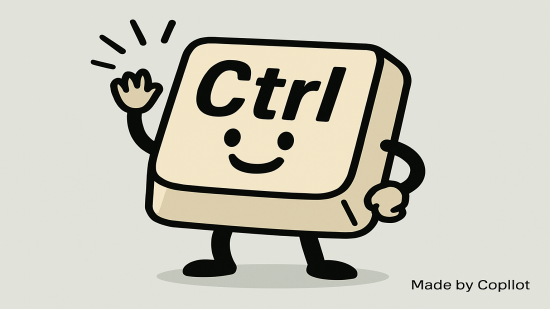

[셈틀과 글쇠] 컨트롤(Control) 키 – 컴퓨터를 다루는 가장 유용한 도구

1. 작성경위
다음은 [한국시각장애인연합회](http://www.kbuwel.or.kr/)에서 발행하는 월간 손으로 보는 세상 제910호(2023. 4. 10.)에 객원기자로 활동하면서 기고한 글입니다.
2. 세부내용
2.1. 들어가는 말
디지털화의 가장 큰 장점 중 하나는, 원본 손실 없이 무한 반복하여 데이터의 재생성이 가능하다는 것이다. 그래서 컴퓨터를 이용한 작업에서 복사하여 붙여넣기는 가장 빈번하고도 필수적인 작업으로 여겨진다. 이를 증명하듯 인터넷 커뮤니티 등에는 컨트롤 키와 영문 c, v 키 조합이나 컨트롤 키와 영문 x, v 키 조합이 각각 ‘복붙’과 ‘짤붙’이라는 신조어로 유행하고 있다.
조금은 과장된 말 일 수 있지만, 컨트롤 키를 안다는 것은 컴퓨터를 사용할 수 있다는 것을 말하고, 컨트롤 키를 얼마나 자주 잘 사용하는 지는, 그 사람이 IT전문가인지 아닌지를 떠나, 컴퓨터 앞에 얼마나 오래 앉아 시간을 보냈는가를 판가름 하는 지표로 볼 수 있다. 그만큼 컨트롤 키의 사용이 중요하다는 의미이다.
2.2. 컨트롤 키는 원래 보이지 않는 문자인 ‘제어문자’를 조합하는 데 사용
처음에 사용된 컨트롤 키의 조합은 최근에 우리가 사용하고 있는 키 조합과는 큰 차이가 있다. 초기의 컴퓨터 자판이나 전신 타자기(키보드와 인쇄기로 구성되어 통신 시스템에서 정보를 전송하는 데 사용되는 전자 기계 장치)에서는 컨트롤 키와 다른 문자 키를 동시에 누르면 그 문자에 할당된 아스키 코드 값 7비트에서 앞의 2비트를 소거할 수 있었다.
예를 들면 영문 m과 M이 가지는 2진수 값은 각각 1101101과 1001101인데, 앞의 2비트를 소거하면 모두 1101이 된다. 즉 시프트 키가 눌러진 상태에 상관없이 같은 값을 가지게 되는 것이다.
이런 방식으로 32개 문자가 생성되었고, 각 문자들은 화면이나 인쇄물에 출력되지 않는 ‘비인쇄용 문자열’이라 하여, 컴퓨터에 신호를 보내 디스플레이 장치의 다음 문자 위치를 제어하거나, 프린터를 제어하거나, 화면을 지우거나, 터미널 벨을 울리는 등의 작업을 수행하게 되었다.
위에서 언급한 컨트롤과 영문 키 m(또는 M)의 조합도 ‘Carriage Return’ 이라는 제어문자가 할당되어 있는데, 이 제어문자의 기능을 마이크로소프트 윈도 환경에서 확인하려면 명령 프롬프트 창을 띄워 ‘dir’과 같은 명령어를 입력하고 컨트롤 키와 영문 m 키를 누르면 된다. 마치 엔터 키를 누른 것처럼 동작하는 것을 확인할 수 있을 것이다(‘리턴(Return)’과 ‘엔터(Enter)’ 의 연관성에 대해서는 다른 회차에서 자세히 설명할 예정이다.).
이렇게 제어문자 입력에 사용되던 컨트롤 키는 기술변화로 더 이상 사용되지 않게 되자, 운영 체계나 응용 프로그램에서 다른 키와 조합하여 지금과 같은 특별한 기능을 실행하게 되었다.
2.3. 문자열 하단 영역의 경계와 위치를 알려주는 ‘컨트롤 키’
대부분의 키보드에는 두 개의 컨트롤 키가 있는데, 일반적으로 스페이스 바 열의 좌우측 양 끝에 위치하고 있어 문자열 키 하단 영역을 확인하는데 도움을 준다. 좌측 컨트롤 키 주변에는 왼쪽에서부터 컨트롤 키, 윈도 키, 알트 키, 한자 키 순서에 따라 배열되어 있고, 우측 컨트롤 키 주변에는 우측부터 컨트롤 키, 메뉴 키, 윈도 키, 알트 키, 한영 키 순서에 따라 배열되어 있다. 다만 일부 노트북의 경우 스페이스 바 열의 맨 좌측에는 왼쪽부터 컨트롤 키, Fn 키 순서가 아닌 Fn 키, 컨트롤 키 순서로 되어 있어 사용에 주의가 필요하다.
앞에서도 언급했지만 컨트롤 키의 가장 큰 특징이자 장점은, 단축 키 조합을 통해 마우스를 여러 번 클릭하거나 키보드를 여러 번 눌러야 하는 명령을 쉽게 수행할 수 있다는 것이다. 사용하는 프로그램 마다 컨트롤 키의 활용이 다른 경우가 있긴 하지만, 시간을 들여 동일한 공통 명령을 수행하는 컨트롤 키 조합을 익힌다면 작업의 능률을 높일 수 있을 것이다.
다음 시간에는 운영체제, 인터넷 브라우저 및 기타 응용 프로그램 등 활성 창에 따라 달라지는 컨트롤 키의 특징과 직접 사용할 수 있는 여러 가지 유용한 키 조합에 대하여 알아보고자 한다.
【참고자료】
- 한국정보통신기술협회, “전신 타자기, 電信打字機, Teletypewriter, TTY”, 정보통신용어사전 (2023. 3. 30. 확인)
- 한국정보통신기술협회, “컨트롤 키, control key”, 정보통신용어사전 (2023. 3. 30. 확인)
- Computer Hope, “Control keys”, (2023. 3. 30. 확인)
- IONOS, “The Ctrl key: explanation and important shortcuts”, (2023. 3. 30. 확인)
- WIKIPEDIA, “Control key”, (2023. 3. 30. 확인)
- WIKIPEDIA, “Control character”, (2023. 3. 30. 확인)